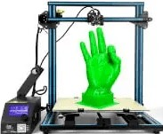
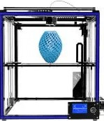
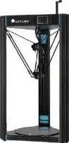

1. L’impression 3D par dépôt de matière
Le FDM ou FFF
La majorité des imprimantes 3D personnelles fonctionnent selon ce principe.
FDM est l’acronyme anglais de Fused Deposition Modeling qui signifie « modelage par dépôt de filament en fusion ».
Ce procédé qui a été inventé en 1988 par la société Stratasys, est une marque déposée.
On parle aussi de FFF (Fused Filament Fabrication) voir même de MPD (Molten Polymer Deposition) qui sont eux des termes libres de droits.
Cette technique consiste à déposer couche par couche un filament de matière thermoplastique fondu à 200°C (en moyenne) qui en se superposant donne forme à l’objet. La tête d’impression se déplace selon les coordonnées X, Y et Z (longueur, largeur et hauteur) transmises par un fichier 3D correspondant au modèle 3D de l’objet à imprimer.
Limitée pendant longtemps à des matériaux de type plastique tels que les classiques PLA et l’ABS, l’impression 3D voit arriver de nouveaux filaments composites à base de métal (cuivre, bronze…), de fibres de carbone et même de bois.
Plus rarement certaines machines utilisent des cires ou des polycarbonates.
Aujourd’hui l’industrie agroalimentaire et la médecine s’emparent peu à peu de cette technique pour imprimer des aliments et des cellules en adaptant la tête d’extrusion.
FDM est l’acronyme anglais de Fused Deposition Modeling qui signifie « modelage par dépôt de filament en fusion ».
Ce procédé qui a été inventé en 1988 par la société Stratasys, est une marque déposée.
On parle aussi de FFF (Fused Filament Fabrication) voir même de MPD (Molten Polymer Deposition) qui sont eux des termes libres de droits.
Cette technique consiste à déposer couche par couche un filament de matière thermoplastique fondu à 200°C (en moyenne) qui en se superposant donne forme à l’objet. La tête d’impression se déplace selon les coordonnées X, Y et Z (longueur, largeur et hauteur) transmises par un fichier 3D correspondant au modèle 3D de l’objet à imprimer.
Limitée pendant longtemps à des matériaux de type plastique tels que les classiques PLA et l’ABS, l’impression 3D voit arriver de nouveaux filaments composites à base de métal (cuivre, bronze…), de fibres de carbone et même de bois.
Plus rarement certaines machines utilisent des cires ou des polycarbonates.
Aujourd’hui l’industrie agroalimentaire et la médecine s’emparent peu à peu de cette technique pour imprimer des aliments et des cellules en adaptant la tête d’extrusion.
Il existe 3 types d'imprimantes FDM :



2 . La solidification par lumière
La stéréolitographie ou SLA
La stéréolitographie est la première technique d’impression 3D à avoir été mise en évidence.
Si la paternité de ce procédé est souvent attribuée à l’américain Charles Hull fondateur de 3D Systems, on doit en fait cette invention à trois français (Alain le Méhauté, Olivier de Witte et Jean Claude André) dont leurs brevets bien que déposés 3 semaines plus tôt (16 juillet 1984), n’ont malheureusement pas été renouvelés. Appelée aussi SLA (Stéréolithographie Apparatus) cette technique consiste à solidifier un liquide photosensible par le biais d’un rayon laser ultraviolet.
Les imprimantes fonctionnant par SLA ont quatre parties principales:
un réservoir qui peut être rempli avec un liquide photopolymère, une plate-forme perforée qui est descendue dans le réservoir, un rayonnement ultraviolet (UV ) et d’un ordinateur commandant la plate-forme et le laser. Tout comme la FDM, l’imprimante va dans un premier analyser le fichier CAO, puis en fonction de la forme de l’objet va lui ajouter des fixations temporaires pour maintenir certaines parties qui pourraient s’affaisser.
Puis le laser va commencer par toucher et durcir instantanément la première couche de l’objet à imprimer.
Une fois que la couche initiale de l’objet a durci, la plate-forme est abaissée, est ensuite exposée une nouvelle couche de surface de polymère liquide.
Le laser trace à nouveau une section transversale de l’objet qui colle instantanément à la pièce durcie du dessous. Ce processus se répète encore et encore jusqu’à ce que la totalité de l’objet ce soit formé et soit entièrement immergé dans le réservoir.
La plateforme va ensuite se relever pour faire apparaitre l’objet fini en trois dimensions.
Après qu’il ai été rincé avec un solvant liquide pour le débarrasser de l’excès de résine, l’objet est cuit dans un four à ultraviolet pour durcir la matière plastique supplémentaire. Les objets fabriqués selon la stéréolithographie ont généralement une bonne qualité de finition et de détail (0,0005 mm) on obtient des surfaces bien lisses et régulières.
Qualitativement elle fait partie des meilleurs techniques d’impression 3D actuellement. La durée nécessaire pour créer un objet avec cette technique dépend également de la taille de la machine utilisée.
La SLA a aussi l’avantage de pouvoir produire de grosses pièces (de plusieurs mètres).
Pour ces objets là il faudra plusieurs jours, quelques heures pour les plus petites. Parmi ces inconvénients, un coût plus élevé que la FDM et un panel de matériaux et des coloris plus limité du fait des polymères utilisés comme matière première.
Les solvants et les liquides polymères dégageant par ailleurs des vapeurs toxiques durant l’impression, votre local devra être équipé d’une hotte aspirante pour l’aération.
Si la paternité de ce procédé est souvent attribuée à l’américain Charles Hull fondateur de 3D Systems, on doit en fait cette invention à trois français (Alain le Méhauté, Olivier de Witte et Jean Claude André) dont leurs brevets bien que déposés 3 semaines plus tôt (16 juillet 1984), n’ont malheureusement pas été renouvelés. Appelée aussi SLA (Stéréolithographie Apparatus) cette technique consiste à solidifier un liquide photosensible par le biais d’un rayon laser ultraviolet.
Les imprimantes fonctionnant par SLA ont quatre parties principales:
un réservoir qui peut être rempli avec un liquide photopolymère, une plate-forme perforée qui est descendue dans le réservoir, un rayonnement ultraviolet (UV ) et d’un ordinateur commandant la plate-forme et le laser. Tout comme la FDM, l’imprimante va dans un premier analyser le fichier CAO, puis en fonction de la forme de l’objet va lui ajouter des fixations temporaires pour maintenir certaines parties qui pourraient s’affaisser.
Puis le laser va commencer par toucher et durcir instantanément la première couche de l’objet à imprimer.
Une fois que la couche initiale de l’objet a durci, la plate-forme est abaissée, est ensuite exposée une nouvelle couche de surface de polymère liquide.
Le laser trace à nouveau une section transversale de l’objet qui colle instantanément à la pièce durcie du dessous. Ce processus se répète encore et encore jusqu’à ce que la totalité de l’objet ce soit formé et soit entièrement immergé dans le réservoir.
La plateforme va ensuite se relever pour faire apparaitre l’objet fini en trois dimensions.
Après qu’il ai été rincé avec un solvant liquide pour le débarrasser de l’excès de résine, l’objet est cuit dans un four à ultraviolet pour durcir la matière plastique supplémentaire. Les objets fabriqués selon la stéréolithographie ont généralement une bonne qualité de finition et de détail (0,0005 mm) on obtient des surfaces bien lisses et régulières.
Qualitativement elle fait partie des meilleurs techniques d’impression 3D actuellement. La durée nécessaire pour créer un objet avec cette technique dépend également de la taille de la machine utilisée.
La SLA a aussi l’avantage de pouvoir produire de grosses pièces (de plusieurs mètres).
Pour ces objets là il faudra plusieurs jours, quelques heures pour les plus petites. Parmi ces inconvénients, un coût plus élevé que la FDM et un panel de matériaux et des coloris plus limité du fait des polymères utilisés comme matière première.
Les solvants et les liquides polymères dégageant par ailleurs des vapeurs toxiques durant l’impression, votre local devra être équipé d’une hotte aspirante pour l’aération.
Le frittage laser
procédé SLS
Cette technique créée par un étudiant américain dans une université du Texas en 1980, a
été
développée plus
tard (2003) par la société allemande EOS.
Appelée aussi SLS (Selective Laser Sintering), il s’agit également d’un processus d’impression par laser.
Cette fois ci un faisceau laser très puissant va fusionner une poudre à des points très précis définis par un fichier STL que communique votre ordinateur à votre imprimante 3D. Les particules de poudre sous l’effet de la chaleur vont alors fondre et finir par se fusionner entre- elles.
Une nouvelle couche de poudre fine est ensuite étalée et à nouveau durcie par le laser puis reliée à la première.
Cette opération est répétée plusieurs fois jusqu’à ce que votre pièce soit finie.
Ensuite, votre partie est soulevée de la poudre libre et l’objet est brossé puis sablé ou poncé à la main pour les finitions. La poudre que l’on utilise le plus souvent pour ce type d’impression est de la polyamide.
De couleur blanche ce matériau est en fait un nylon.
Il va donner à votre objet une surface poreuse qui pourra d’ailleurs être repeint si vous souhaitez lui donner de la couleur.
D’autres composants comme de la poudre de verre ou de la céramique peuvent être aussi utilisés.
Souvent les fabricants utilisent un mélange de deux sortes de poudres pour obtenir des objets plus aboutis.
Appelée aussi SLS (Selective Laser Sintering), il s’agit également d’un processus d’impression par laser.
Cette fois ci un faisceau laser très puissant va fusionner une poudre à des points très précis définis par un fichier STL que communique votre ordinateur à votre imprimante 3D. Les particules de poudre sous l’effet de la chaleur vont alors fondre et finir par se fusionner entre- elles.
Une nouvelle couche de poudre fine est ensuite étalée et à nouveau durcie par le laser puis reliée à la première.
Cette opération est répétée plusieurs fois jusqu’à ce que votre pièce soit finie.
Ensuite, votre partie est soulevée de la poudre libre et l’objet est brossé puis sablé ou poncé à la main pour les finitions. La poudre que l’on utilise le plus souvent pour ce type d’impression est de la polyamide.
De couleur blanche ce matériau est en fait un nylon.
Il va donner à votre objet une surface poreuse qui pourra d’ailleurs être repeint si vous souhaitez lui donner de la couleur.
D’autres composants comme de la poudre de verre ou de la céramique peuvent être aussi utilisés.
Souvent les fabricants utilisent un mélange de deux sortes de poudres pour obtenir des objets plus aboutis.
SLM
3 . L’agglomération de poudre par collage
LA 3DP (Three-Dimensional Printing)
Initialement développée en 1993 au Massachusetts à l’Institut of Technology (MIT) en 1993, la
3DP
(Three-Dimensional Printing) constitue la base du processus d’impression 3D de Z
Corporation.
Le procédé consiste en l’étalement d’une fine couche de poudre de composite sur une plateforme.
La tête d’impression va alors déposer sur celle-ci de fines gouttes de glu colorées qui combinées entre elles permettent d’obtenir un large panel de couleur.
La plateforme s’abaisse au fur et à mesure que les couches de poudre sont collées jusqu’à obtenir l’objet final. Pour la finition il faut aspirer l’excédent de poudre, brosser et/ou poncer la pièce, puis la chauffer pour finaliser la solidification.
La 3DP a l’avantage d’être rapide et de proposer une large gamme de couleurs. Jusqu’à 6 fois moins chère qu’une imprimante 3D SLA son prix est plus attractif malgré une précision et une qualité d’impression parfois inférieure.
Parmi les inconvénients, sans traitement post-impression les pièces sont plus fragiles et leur surface est plus rugueuse.
Le procédé consiste en l’étalement d’une fine couche de poudre de composite sur une plateforme.
La tête d’impression va alors déposer sur celle-ci de fines gouttes de glu colorées qui combinées entre elles permettent d’obtenir un large panel de couleur.
La plateforme s’abaisse au fur et à mesure que les couches de poudre sont collées jusqu’à obtenir l’objet final. Pour la finition il faut aspirer l’excédent de poudre, brosser et/ou poncer la pièce, puis la chauffer pour finaliser la solidification.
La 3DP a l’avantage d’être rapide et de proposer une large gamme de couleurs. Jusqu’à 6 fois moins chère qu’une imprimante 3D SLA son prix est plus attractif malgré une précision et une qualité d’impression parfois inférieure.
Parmi les inconvénients, sans traitement post-impression les pièces sont plus fragiles et leur surface est plus rugueuse.